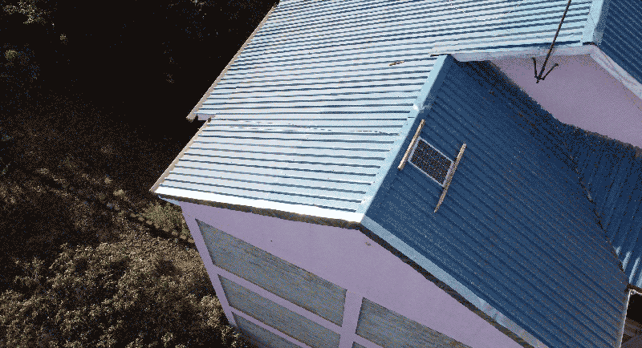

Questions of Stewardship, Intermittency and Low Bandwidth Gaming
The interview, Benedetta (Hells Gate server, Queens, NY, USA, @40.762855,-73.9088269) and Denzel (Solar Power for Hackers, Nairobi, Kenya, @-1.303209,36.8473969), delved into various aspects of living with these systems, the stewardship journey, the learning process, ideas around co-designing resources for the future sustainability of the network and overall goals for servers in the context of their local ecosystem. Through this exchange in perspectives, we were looking to gain a deeper understanding of the human connection to the solar-powered infrastructure, the challenges and opportunities associated with intermittency and how this kind of self-hosted platform can create meaningful connections with the surrounding community.The insights shared by the stewards shed light on the unique and evolving role of server stewardship within the Solar Protocol network, offering valuable insights for the ongoing development and deployment of sustainable technology systems on a planetary scale.
Below is an edited version of Benedetta & Denzel’s online conversation from August, 2022.
Benedetta: Originally, you filled out one of our very early interest forms that we shared online. We are really curious, what inspired you to join Solar Protocol and was there something specific that you wanted to get out of this experience?
Denzel: I'm really excited about the technical opportunities that are there. My interest is mainly around how we can create decentralized technologies, where some users are interested in hardware and where others might create their own formal "projects" that can run independently of a centralized server. I’m also interested in how you can build small computing units that are powerful while also energy efficient. Benedetta: Did you have any previous experience working with solar or servers before you engaged with the project?
Denzel: Yes, my day to day job is software engineering, and I do deployment of applications to the cloud. And also for solar, I have hands-on experience deploying robotic applications, just mechanization and information processing in the field and building off-grid, sort of mini power plants.
Solar panel powering a solar server in Nairobi.
Benedetta: How do you think that your previous experience compares to working on this more experimental project?
Denzel: For my team, me and Cyrus, Cyrus is very strong on the hardware side. His day to day job is electronics engineering. On the hardware side, it was really easy for us to hook everything up. Where I see opportunities to think more and do more work is really around software. I haven't done much because the language that the SP software is written in, I don't use that. I'm not really conversant with that. I'm just going through the code and trying to see where I might be able to re-write and maybe do features with a different language without really breaking the whole thing. I’m interested in contributing technically to the project based on my previous experience.
Benedetta: First of all, there's no issue in breaking stuff, just because things break all the time! I feel like this is very much a constant work in progress, but I think, yes, we would love to facilitate more activities around the software side of things.
Now that you and Cyrus have been coexisting with this server for some time, I was wondering where does it live? How is your experience with it, if you've tried to do anything with it? And, of course, also, what challenges have you encountered? One of the things that we would like to figure out moving forward is how can we address challenges and problems as they arise more collectively?
Like you were saying about the distributed nature of this system, I think one of the things that we really want to invest time and energy into is figuring out how we can create a human distributed infrastructure so that things can continue to work over time. So where is your server, how has been your experience with it so far? Have you tried to do anything with it, and what are some challenges that you might have encountered?
Denzel: The server is on the balcony. We haven't really moved it since we installed it in November 2021. On the hardware side, everything is okay, it's holding up physically well. The software side I'm really interested in doing a couple of mini projects around that. The one that I wanted to do immediately was how I could use it just as a minor content delivery network (CDN) to process some of the content that I have.
I have a lot of content around gaming, so I wanted to see how that holds up in that application. My main home network is separate from Solar Protocol... I have two connections. One's hosting the protocol. One's just for my house. The idea was to figure out how to just have one, but I think I am just very afraid of the networking issues because it gave us a lot of headache last time. I wanted to run some small servers that are decentralized. Especially in gaming, let's say for example, you're building a game, like the way open world games are created, but this time the content, maybe, is generative.
Benedetta: Are there low power or low bandwidth gaming platforms or games that you are inspired by?
Denzel: Yeah. The ones I know of, to be honest, are very, very experimental. They're supposed to be low bandwidth, but they're going to eat up your RAM, in exchange, just as a trade-off for the bandwidth. The gaming that is really more focused on this, where instead of the developer just doing it by himself fully, there's some bits of it where let's say, for example, you have an open world game and I can say, "Okay, I want to create a Nairobi City or a city somewhere outside New York" and it’s going to have just anything imaginary and I want to see if I can maybe use the dynamic data of them collecting from the nodes around that. It's still very rough-ish. I don't have something fully constructed, but that's the idea I had.
Benedetta: That sounds awesome. That's actually another goal of these chats, too, is we want to figure out a way in which we can support your project ideas. Anything that we can do to help with testing that out, or trying to pilot some sort of gaming system on the protocol would be something that we would love to support.
In terms of challenges, you mentioned some challenges with networking and I would love to collect more information around what those problems were, because we don't know how Internet Service Providers (ISPs) operate in every part of the world. This was, I think, a really good lesson learned for us. What were the Internet connectivity challenges, but also are there any other challenges that you have encountered that we haven't addressed yet?
Denzel: Yeah, I think for our team, there was sort of an advantage because we come from technical backgrounds, and something we deal with on a daily basis. It's a little bit easier for us to just move around. I think we should have done a better job of communicating, especially on the software piece. During the process of installation and trying to get things running up, there were problems even just with the operating system, trying to clone the project from GitHub and trying to build everything. There were some challenges, but I think I took it upon myself and I just said I'm going to make sure that I have one command line that for someone who doesn’t have technical know-how can just input and everything sets up. I think the process of, you know, getting an SD card, you format it, you buy all the things you need, then figure out how to clone, install the library, it kind of felt like that was really long.
Benedetta: I would love for folks who are willing to make different parts of this platform better to get involved and I agree with you that the install could be a lot more streamlined.
Switching gears for a second. I have a question about how this project is a little unique in a way, maybe, in a sense that one of the things that we wanted to explore was this idea that not everything has to be always on, always operating at the highest bandwidth and always available 24/7. I was wondering what your experience so far has been with the fact that this is a system that's intermittent. If its intermittency has sparked any ideas for projects or applications that could work well with things turning on and off with the sun. Our servers kind of come in and out of the network with the sun so I was wondering if this has made you think at all about this intermittency and if the fact that it comes and goes is something that's been problematic, or has given any ideas for things that would work well?
Solar protocol Nairobi installation.
Denzel: Yeah. To me, I'm curious. I'm really fascinated by the project because it's something that I want to maybe do my postgraduate studies on. I did robotics engineering in my undergraduate and my undergraduate thesis was on how you can build networks of intelligent devices and how they can collaborate with each other to sort of make each other better. It's something I really think a lot about and trying to see how it can have some practical applications. I think the most practical applications are a bit high end, especially just for industries and maybe cars that are coming into production, but that day to day projects, I don't really have any in mind. The concept itself of interdependence, that you have these outputs that you need, let's say a server and beneath it or behind it, they can be a decision making system that, let's say, will be powered by the sun or EV. Then the nodes in between can be interdependent and self proving. It's really a fascination that I would love to explore deeper. Benedetta: Are there communities that you're part of that you might want to bring into the work with Solar Protocol?
Denzel: Yeah. I think for me, the communities that are interesting are, first the community around more "serious"/professional applications of AI, I think it's called Edge Intelligence. It's how you deploy these AI models into simple or smaller computing units. That would be one. And the other one is online gaming, of course! [laughs]